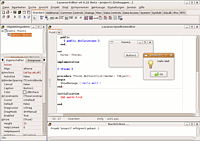

Lazarus
Dieser Artikel wurde für die folgenden Ubuntu-Versionen getestet:
Ubuntu 14.04 Trusty Tahr
Zum Verständnis dieses Artikels sind folgende Seiten hilfreich:
Lazarus  ist eine visuelle Entwicklungsumgebung für die Programmiersprache Pascal und stellt eine freie Alternative zu Delphi für Windows und dem eingestellten Linux-Port Kylix dar. Unterstützt wird der plattformunabhängige Free Pascal-Compiler und mehrere populäre GUI-Toolkits wie GTK2 und QT. Zudem stehen eine ganze Reihe vorgefertigter Komponenten z.B. für Datenbankverbindungen zur Verfügung.
ist eine visuelle Entwicklungsumgebung für die Programmiersprache Pascal und stellt eine freie Alternative zu Delphi für Windows und dem eingestellten Linux-Port Kylix dar. Unterstützt wird der plattformunabhängige Free Pascal-Compiler und mehrere populäre GUI-Toolkits wie GTK2 und QT. Zudem stehen eine ganze Reihe vorgefertigter Komponenten z.B. für Datenbankverbindungen zur Verfügung.
Installation¶
Offizielle Paketquellen¶
Lazarus liegt in den offiziellen Ubuntu-Paketquellen. Man installiert das Paket [1]
lazarus (universe )
 mit apturl
mit apturl
Paketliste zum Kopieren:
sudo apt-get install lazarus
sudo aptitude install lazarus
Dabei wird auch Free Pascal als Abhängigkeit installiert.
Einzelpakete¶
Um GTK+ Programme mit Lazarus erstellen zu können, müssen die folgenden Pakete installiert werden:
libgtk1.2-dev
libgdk-pixbuf-dev (universe )
build-essential
mit apturl
Paketliste zum Kopieren:
sudo apt-get install libgtk1.2-dev libgdk-pixbuf-dev build-essential
sudo aptitude install libgtk1.2-dev libgdk-pixbuf-dev build-essential
Inoffizielle Paketquellen¶
Auf http://www.hu.freepascal.org/lazarus gibt es eine Ubuntu-Quelle für stabile Lazarus-Pakete und Entwicklerversionspakete und Free Pascal.
Stabile Version¶
Um aus der Fremdquelle zu installieren, muss man unabhängig von der Ubuntu-Version die folgende Paketquelle freischalten:
Hinweis!
Zusätzliche Fremdquellen können das System gefährden.
deb http://www.hu.freepascal.org/lazarus/ lazarus-stable universe
Um die Fremdquelle zu authentifizieren, kann man den Signierungsschlüssel mit folgendem Befehl importieren:
sudo apt-key adv --recv-keys --keyserver keyserver.ubuntu.com 6A11800F
Die Installation erfolgt wie oben beschrieben.
Entwicklerversion¶
Um aus der Fremdquelle zu installieren, muss man unabhängig von der Ubuntu-Version die folgende Paketquelle freischalten:
Hinweis!
Zusätzliche Fremdquellen können das System gefährden.
deb http://www.hu.freepascal.org/lazarus/ lazarus-testing universe
Um die Fremdquelle zu authentifizieren, kann man den Signierungsschlüssel mit folgendem Befehl importieren:
sudo apt-key adv --recv-keys --keyserver keyserver.ubuntu.com 6A11800F
Die Installation erfolgt wie oben beschrieben.
Benutzung¶
Lazarus kann nun als lazarus bzw. lazarus-ide gestartet werden. [2]
|  |
| GTK 2 Oberfläche |
Hallo Welt¶
Ein Hallo-Welt Testprogramm mit grafischer Oberfläche lässt sich dank der visuellen Programmierumgebung sehr schnell erstellen. Schon beim Start von Lazarus steht ein Basisgrundgerüst für ein Programm zur Verfügung, dass sich auch schon kompilieren lässt. Es handelt sich jedoch um ein leeres Programm.
Mit
F12 lässt sich zwischen Quelltexteditor und einer Entwurfsansicht der grafischen Oberfläche hin und her wechseln. Um dem Beispielprogramm einen Knopf hinzuzufügen wählt man aus der Menüleiste "Standard" die Schaltfläche an und platziert ihn mit einem  -Klick in der Entwurfsansicht. Daraufhin klickt man doppelt auf den neu angelegten Knopf und landet im Quelltexteditor. Der Cursor befindet sich genau innerhalb einer neu angelegten Funktion. Man ergänzt noch
-Klick in der Entwurfsansicht. Daraufhin klickt man doppelt auf den neu angelegten Knopf und landet im Quelltexteditor. Der Cursor befindet sich genau innerhalb einer neu angelegten Funktion. Man ergänzt noch ShowMessage ('Hallo Welt'), um eine einfache Nachrichtenbox zu erhalten, die auf Knopfdruck erscheint.
Der Teilabschnitt des Quelltextes soll im Endeffekt so aussehen:
1 2 3 | procedure TForm1.Button1Click(Sender: TObject); begin ShowMessage ('Hallo Welt'); end; |
Nun drückt man F9 oder den grünen Pfeil, um das Programm zu kompilieren und auszuführen.
Um die Entwicklungsumgebungen noch ein bisschen weiter zu erkunden, kann man sein Programm erst einmal abspeichern und noch weiter modifizieren. Um die grafische Oberfläche noch weiter anzupassen, kann man den Objektinspektor verwenden. Im Objektinspektor auf der rechten Seite sind alle Bestandteile der grafischen Oberfläche aufgelistet. Objekte mit veränderbaren Eigenschaften sind z.B. das Fenster ("TForm") und der Knopf ("TButton"). Diese Objekte können auch Signale auslösen, die wiederum mit Quelltext verknüpft werden. In diesem Beispiel löst das Ereignis "OnClick" des Knopfes die Prozedur "TForm1.Button1Click" aus, die in diesem Fall ein simples Nachrichtenfenster öffnet.
Da diese Komponenten zur LCL (Lazarus Component Library) gehören, werden damit erstellte Anwendungen meist recht groß.
Problembehebung¶
Empfohlene Pakete¶
Um Fehlermeldungen beim Starten bzw. Kompilieren zu vermeiden, werden folgende Pakete empfohlen:
fpc-source (universe)
mit apturl
Paketliste zum Kopieren:
sudo apt-get install fpc-source
sudo aptitude install fpc-source
Im Allgemeinen benötigt man wohl alle zur Verfügung stehenden Units:
Paketliste zum Kopieren:
sudo apt-get install fp-units-*
sudo aptitude install fp-units-*
Alle diese Units liegen in universe.
Oberfläche¶
Lazarus wurde bis Version 0.9.26 standardmäßig mit der etwas in die Jahre gekommenen GTK-1-Oberfläche ausgeliefert, da dies die stabilste Implementierung im Free Pascal Projektes darstellt. Es werden jedoch noch mehr GUI-Toolkits von der Lazarus Component Library unterstützt. In neueren Versionen ist beispielsweise GTK2 im Einsatz. Um die Oberfläche zu wechseln, startet man Lazarus ausnahmsweise mit Root-Rechten [5].
sudo startlazarus
und lässt Lazarus sich selbst kompilieren. Dafür wählt man in der Menüleiste
"Werkzeuge -> 'Lazarus erstellen' einrichten"
Man setzt alle Beiträge auf "Clean + Build" und setzt einen Haken bei "Alles säubern". Nutzer von Ubuntu und Xubuntu wählen "gtk2", während Nutzer von Kubuntu "qt" auswählen, um nicht zu viele Abhängigkeiten nachinstallieren zu müssen. Danach drückt man den Knopf "Erstellen", geduldet sich ein bisschen und startet Lazarus mit Standard-Benutzerrechten neu und arbeitet normal weiter.
Oberfläche direkt beim Kompilieren ändern¶
Falls man Lazarus aus dem Quellcode kompiliert und nicht das GTK-2- bzw. GTK-1-Toolkit verwenden möchte, kompiliert man Lazarus mit dem Befehl
make clean all LCL_PLATFORM=das_toolkit
wobei das_toolkit unter Kubuntu durch qt ersetzt werden sollte, und wenn man GTK-1 bevorzugt, reicht gtk.
QT-Probleme unter Kubuntu¶
Fenster haben keine Knöpfe zum Schließen¶
Es kann bei der Verwendung von QT 4.5 vorkommen, dass die Fenster der Lazarus-IDE und der kompilierten Projekte sich weder über den üblichen Schließen-Knopf, noch über das Kontextmenü des jeweiligen Fensters schließen lassen. In diesem Fall hilft eine Änderung der Datei qtwsforms.pp: Die Zeile
1 | Flags := Flags or GetQtBorderIcons(ABorderIcons) or QtWindowTitleHint; |
muss durch
1 | Flags := Flags or GetQtBorderIcons(ABorderIcons) or QtWindowTitleHint or $08000000 or QtCustomizeWindowHint; |
ersetzt werden. Wenn Lazarus danach mit oben genanntem Befehl neu kompiliert, sollten die Fenster wieder einen Schließen-Knopf anbieten.
Schriftart¶
Wenn die Schriftart in der GTK-1-Oberfläche zu klein und unleserlich ist, kann man dies unter "Einstellungen -> Editoreinstellungen -> Anzeige" ändern.
Kompilierfehler¶
Fatal: Can't find unit glib¶
Wird dieser Fehler anzeigt, wurde unter Umständen die Datei /etc/fpc.cfg bei der Installation nicht erstellt. Dies sollte man dann selbst mit einem Editor mit Root-Rechten [5] nachholen. Der Inhalt lautet wie folgt:
1 2 3 | -Fu/usr/lib/fpc/$fpcversion/units/$fpctarget -Fu/usr/lib/fpc/$fpcversion/units/$fpctarget/* -Fu/usr/lib/fpc/$fpcversion/units/$fpctarget/rtl |
Anwendungen sind sehr gro߶
Oftmals werden die ausführbaren Dateien über 10 MB groß. Dies kann einen der folgenden Gründe haben:
Die einfachste Lösung ist, die Debuginfos zu entfernen und so die Datei zu verkleinern:
strip <kompiliertes-projekt>
Free Pascal wurde falsch konfiguriert. In "Projekt -> Compilereinstellungen" kann man verschiedene Einstellungen ausprobieren. Achtung: Das Programm startet eventuell nicht mehr aus Lazarus heraus.
Der Linker wurde falsch konfiguriert. Wenn man einen Build veröffentlichen will, sollte man die Debuggersymbole aus der Datei entfernen, die entsprechenden Einstellungen finden sich in "Projekt -> Compilereinstellungen" unter dem Reiter "Linken".
Es wurden Units eingebunden,die nicht benötigt werden. Bei der Kompilierung werden diese meistens mit Hinweisen aufgelistet.

- Erstellt mit Inyoka
-
 2004 – 2017 ubuntuusers.de • Einige Rechte vorbehalten
2004 – 2017 ubuntuusers.de • Einige Rechte vorbehalten
Lizenz • Kontakt • Datenschutz • Impressum • Serverstatus -
Serverhousing gespendet von